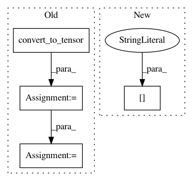

352ebffaa5bd74a454c3b2b10121b2d959ade2fc,opennmt/models/sequence_tagger.py,SequenceTagger,_build,#SequenceTagger#Any#Any#Any#Any#,49
Before Change
// predictions must contain tensors with the same batch size
// so replicate the transition matrix accordingly.
transition_params = tf.convert_to_tensor(transition_params)
transition_params = tf.expand_dims(transition_params, axis=0)
transition_params = tf.tile(transition_params, [tf.shape(logits)[0], 1, 1])
predictions["logits"] = logits
predictions["transition_params"] = transition_params
else:
probs = tf.nn.softmax(logits)
predictions["argmax"] = tf.argmax(probs, axis=2)
After Change
predictions = {}
predictions["length"] = encoder_sequence_length
predictions["labels"] = labels_vocab_rev.lookup(labels)
return tf.estimator.EstimatorSpec(
mode,
In pattern: SUPERPATTERN
Frequency: 3
Non-data size: 4
Instances
Project Name: OpenNMT/OpenNMT-tf
Commit Name: 352ebffaa5bd74a454c3b2b10121b2d959ade2fc
Time: 2017-08-22
Author: guillaume.klein@systrangroup.com
File Name: opennmt/models/sequence_tagger.py
Class Name: SequenceTagger
Method Name: _build
Project Name: Microsoft/nni
Commit Name: 55b557f17385ca10b8a3e8fb8bbb0d3799906db5
Time: 2019-11-20
Author: 38930155+chicm-ms@users.noreply.github.com
File Name: src/sdk/pynni/nni/compression/tensorflow/builtin_pruners.py
Class Name: FPGMPruner
Method Name: _get_min_gm_kernel_idx
Project Name: uber/ludwig
Commit Name: a0a14ed743f511932db8234b2521a9eebfecde31
Time: 2020-07-09
Author: w4nderlust@gmail.com
File Name: tests/ludwig/models/modules/test_encoder.py
Class Name:
Method Name: encoder_test